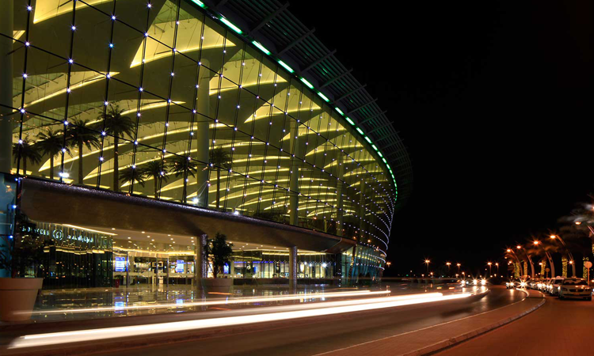
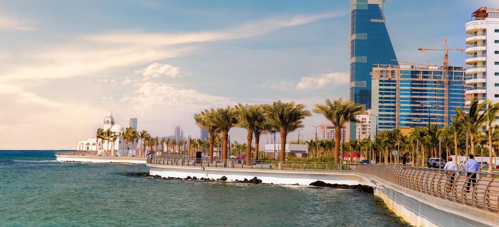

Project Details
The regeneration of Saudi Arabia’s Red Sea coast will take a big jump forward with a SR18 billion ($5 billion) project by the Public Investment Fund (PIF) to lead the redevelopment of Jeddah’s waterfront corniche, to become “New Jeddah Downtown.” The plan, will generate 36,000 new jobs in the city over the next 10 years,
read more!

Project Size
It is planned that the project will be over 5 million square meter which will be divided as follows: 42% of the whole area will be for residential units, 12% for entertainment, and 11% for hospitality facilities. However, it is also planned to develop all the districts, streets, commercial centers, and parks.
read more!

10 facts about jdt
The Kingdom is witnessing several mega development projects that come within the framework of the vision of the Kingdom of Saudi Arabia 2030 and the National Transition Program. The Jeddah Downtown project is one of the most promising projects. and here is in this article 10 facts about the project .
read more!